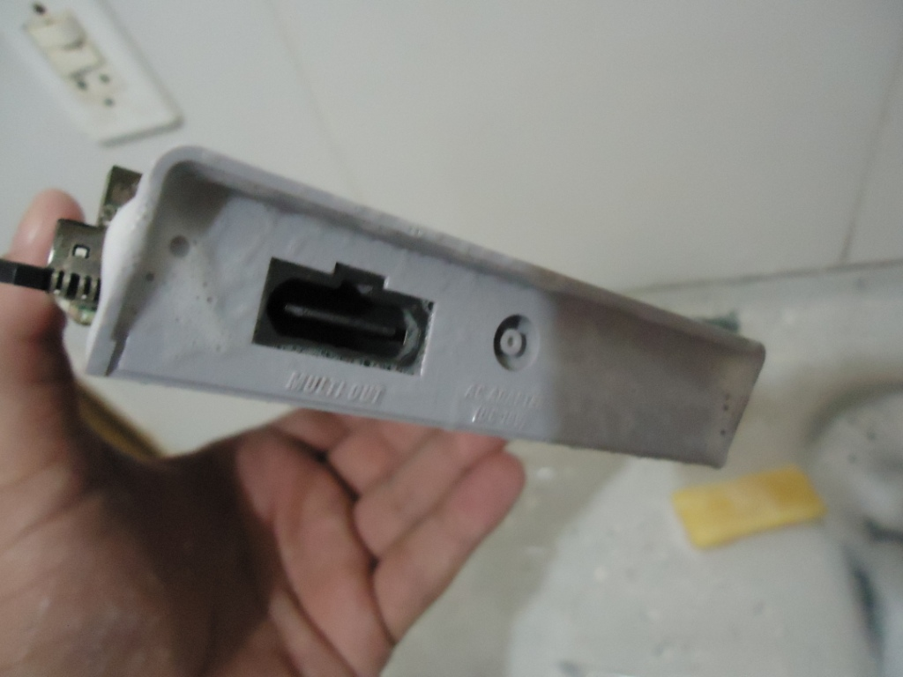
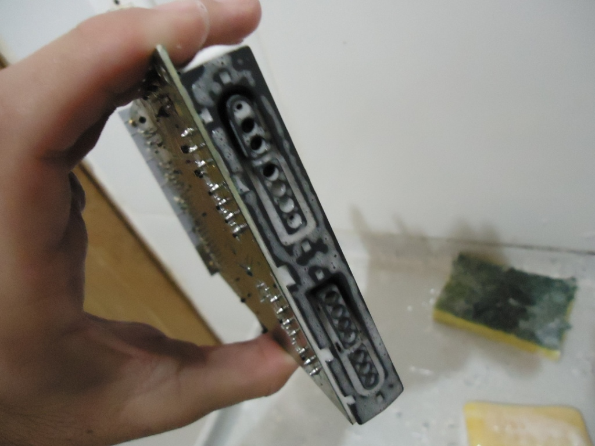
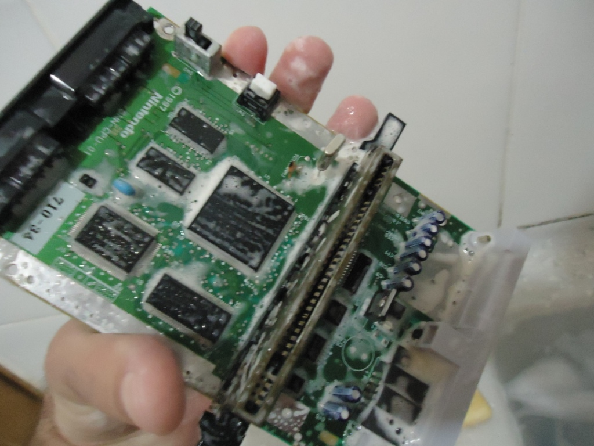
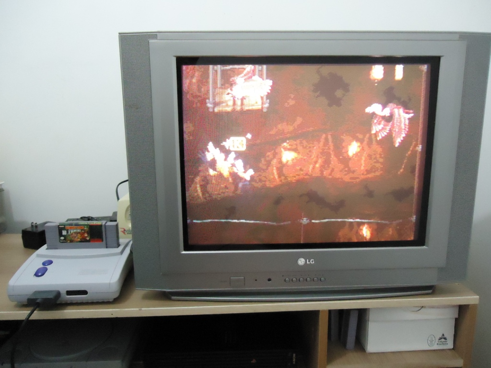

SNES - Ressucitando o Baby
 Por Gigacom :::. Comprar video game por um preço muito baixo e com a descrição "VENDA NO ESTADO" não dá em outra, você acaba sempre recebendo um console inutilizado. Mas como gosto de desafio (e como tambem tava baratinho), resolvi comprar esse SNES Baby e me aventurar a ressucitá-lo. Só que dessa vez tive que radicalizar...
Por Gigacom :::. Comprar video game por um preço muito baixo e com a descrição "VENDA NO ESTADO" não dá em outra, você acaba sempre recebendo um console inutilizado. Mas como gosto de desafio (e como tambem tava baratinho), resolvi comprar esse SNES Baby e me aventurar a ressucitá-lo. Só que dessa vez tive que radicalizar...
__________________________________________________________________
Acredito que muita gente depois de ler esse artigo terá os proprios conceitos acerca demanutenção e cuidado sobre equipamentos eletrônicos irá mudar. Tabem acho que vai chover de gente querendo me tacar pedra e cruxificar, mas a verdade é que a forma que usei para trazer vida a esse pequeno Super Nintendo funciona, e pode ser aplicada tambem a outros consoles que alcançaram um estágio critico onde o técnico fala, "FUDEO! TÁ MORTO!". Bem, esta é a criança que me chegou em casa num sábado embrulhado e papel jornal com anuncios de carro velho:
Sujo, arranhado e pelo jeito meio estruprado (sabem como é, tentaram abri-lo ali por trás e... bem, enfim). Esteticamente o console tava um lixo, se nas fotos já parecia estar ruim, ao vivo era bem pior. A primeira coisa que fiz foi ver se o console tava ligando. Coloquei um cartucho qualquer, conectei os cabos e... tela preta, mas com algum sinal de video. Dei uma boa olhada no slot de entrada de cartuchos, passei um pincel com alcool, deixei bem limpinho e... tela preta de novo. Troquei o cartucho, coloquei uns outros três e o resultado era sempre o mesmo. Como a situação não mudava, lá fui eu abrir o console com minha caneta gamebit (aprenda a fazer uma clicando aqui, com ela você consegue abrir qualquer Super Nintendo):
Dentro do console, encontrei mais sujeira acumulada nos cantos e reentrancias. Resolvi desmontar tudo e dar uma boa olhada na placa mãe. As vezes uma sujeirinha aqui ou ali na placa costuma dar nesse tipo de problema, mas aparentemente a placa mãe tava só meio empoeiradinha, passei um pincel só para garantir, liguei a placa de novo e nada, a mesma tela preta. Tinha umas gambiarras aqui e ali que algum sujeito fez para deixar o console em PAL-M, mas de todo modo, tava tudo certinho, bem feito e sem nenhum problema. Como vi que a coisa tava feia, o jeito seria apelar, mas primeiro, o plástico do console precisava de um trato, queria deixar aquele SNES novinho de novo funcionando ou não. Nisso, vocês sabem que não tem mistério, o jeito é pegar as peças todas as plásticas e lavar com água e sabão:
Deixei o plástico um brinco, tudo limpinho dando gosto de ver, tava até brilhando para você ter uma idéia. Aquela faca é paa mostrar como se tira aqueles adesivos malditos de garantia de loginha de eletrônica. Aquele adeisvo é uma praga, o bicho gruda que nem uma sangue suga, e para tirá-lo o jeito foi usar a ponta de uma faca e ir arrancando-o pelas laterais. Funcionou, e a água deu uma ajudinha tambem para limpar o que ficou da cola.
Mas agora, tinha que dar um jeito na placa mãe, tinha que fazer ela voltar a funcionar. A solução? Bem... te segura ai na cadeira que você vai ver. Antes... como a escovinha e o sabão tavam ali do lado, aproveitei para limpar a entrada dos controles e dos cabos de energia e video:

Uma molhadinha aqui de leve, um sabãozinho ali... e a placa mãe grudada em tudo. Daí você deve tá pensando: caraca Giga! Que perigo! Se cai um pingo dágua na placa mãe vai é fuder tudo! Pois é caro amiguinho, eu tomei um cuidado santo para que não caisse nenhuma gotinha dágua mas em compensação...

Rá! Foooooooooooooda-se o que o povo pensa sobre água em circuito elétrico, eu fiz foi dar um banho nessa plaquinha aé! Antes que você tenha um treco, saiba de uma coisa: não havendo corrente eletrica passando pelo circuito ou acumulada em algum componente, pode cair uma chuva no circuito que não acontecerá nada. É claro que isso não vale para tudo, pois se você deixa cair um copo de água dentro duma televisão dessas de tubo, mesmo com ela fora da tomada... o resultado deverá ser desastroso (vai ter capacitor estourando pra todo lado!). Mas como video games em geral não tem nenhum componente que acumule carga de verdade, esse risco é bem pequeno. Já vi vários casos de video games e outras coisas levarem um banho e continuarem a funcionar. O primeiro foi um Master System quadradão, de um amigo, que quando criança sem querer deixou o coitado cair dentro de um tanque cheio de água e amaciante, o Master saiu de lá, e depois de seco continuou funcionando de boa e cheirozinho. Depois foi um outro Master, so que um Master 3, que um amigo comprou mas que antes de chegar nas mãos dele, o console estava largado no quintal de uma casa levando a maior chuva durante dias a fio. Depois de seco, o console pegou de primeira. Há um outro caso tambem de um amigo eletrônico que já tinha feito de tudo para arrumar um aparelho de som de um cliente, sem que ele descobrisse qual era o defeito. Ele um dia fechou a loja e foi para casa, e como na noite desse dia deu um toró daqueles na cidade, acabou aparecendo uma cachoeira do telhado e caiu bem cima do rádio. Ele foi lá, secou o rádio, espetou ele na tomada e... funcionou! A maior parte das pessoas acredita que se houver água em cima de um circuito eletrico a mesma irá provocar um baita curto pondo tudo a perder porque a água é um condutor de eletricidade. Mas a verdade é que a água é um péssimo condutor (se fosse tão bom quanto todos imaginam, seria usada no lugar dos fios de cobre não acha?), então, quanto mais baixa a tensão pior será a condutividade.
Mas enfim, voltando ao nosso artigo, dei uma bela duma lavada na placa mãe do SNES. Até pensei em dar uma esfregada com BomBril ali no slot que já tava meio enferrujado, mas não tive saco para isso (você pode fazer isso se quiser, a ferrugem sai rapidinho). E como tudo tava bem limpo... sequei bem todas as partes, tomando cuidado para não deixar água acumulada embaixo dos CIs (pois é claro, se ligar o console com água aí sim vai fuder com tudo) e remontei o console:
Notaram como o console ficou bonito? E para testar, Donkey Kong, um dos joguinhos mais famosos da época desse SNES Baby. E com tudo certo, movi a chavinha do Power para frente e...

Tcharan! Mais um console de volta a vida! Aproveitei para tirar a poeira dos dedos e tentar zerar DK de novo. E eis aí uma prova amiguinhos, de que lavar a placa mãe de um console ao invés de causar um desastre pode é fazê-lo funcionar de novo.
Duvidas, sugestões, declarações de amor, já sabem, só postar lá no Trombone.
Acesse o Trombone e comente sobre essa matéria!


Aqui, vou apresentar a restauração de um controle de SNES que comprei em péssimo estado numa feirinha da minha cidade, e que agora está lindinho funcionando perfeitamente. Confira as dicas, e faça uma restauração você também